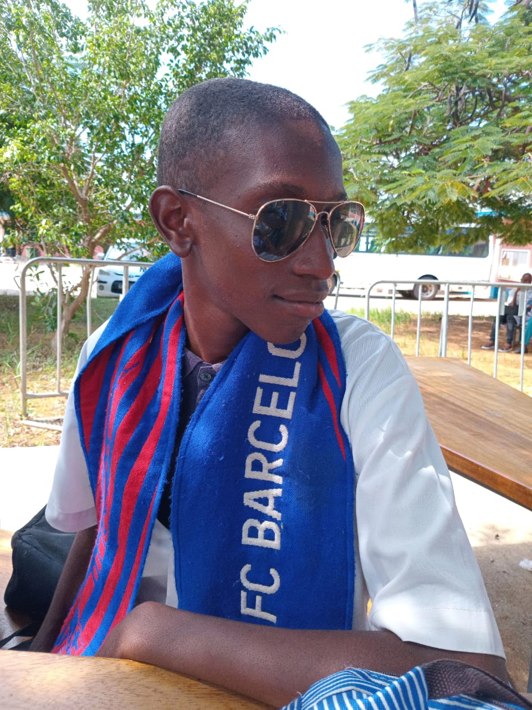

Quem Somos

Stélvio Marques
Sou um desenvolvedor apaixonado por tecnologia e criação de soluções digitais. Com foco em desenvolvimento web, softwares personalizados e ferramentas inteligentes, ajudo clientes a transformar ideias em realidade. Minha jornada começou com a curiosidade por código e evoluiu para a construção de projetos que agregam valor.
Trabalhei em diversos projetos, desde sites responsivos até aplicações complexas, sempre buscando inovação e qualidade. Aqui na Coding&Co, meu objetivo é oferecer serviços sob medida, com dedicação e expertise.
Nossos Serviços
- Desenvolvimento de sites responsivos
- Criação de softwares personalizados
- Ferramentas inteligentes com IA
- Suporte técnico e manutenção